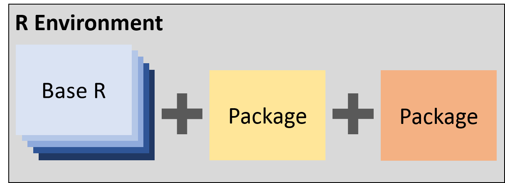

5 R and R Studio
5.1 What is R?
R is an open source programming language developed for statistical computing and graphic production. “R can be considered as a different implementation of S”, a language that was developed at Bell Laboratories (https://www.r-project.org/about.html).
5.1.1 Benefits of Using R
- Reproducibility: Standardized processes (e.g., functions, loops, documentation)
- When using MS Excel processes are often spread across multiple sheets or calculations are performed haphazardly within a single sheet. In general, this makes it very hard to interpret processes preformed and to reproduce the process.
- Power: Ability to perform simple and complex data manipulations, iterative processes, and calculations
- Access to more than 10,000 packages on CRAN
- New packages are constantly being developed
- New features are constantly being added to existing packages
5.1.2 R Packages
R packages are extensions of base R that provide additional features or provide alternative functionality.
- Availability
- CRAN (https://cran.r-project.org/)
- The Comprehensive R Archive Network (CRAN)
- FTP and web servers that store R Packages
- Packages are required to meet certain standards
- GitHub (https://github.com)
- These packages are usually under development
- Contains development versions of many packages available on CRAN
- Custom (http://r-pkgs.had.co.nz/)
- You have the ability to create your own packages.
- CRAN (https://cran.r-project.org/)

5.2 RStudio
Open source integrated development environment (IDE) for R developed by R Studio.
- Edit scripts
- Run scripts
- Navigate files
- Organize projects
- Utilize version control (Git and Subversion)
- View static and interactive graphics
- And more…
5.2.1 Create a New Script
- Click on the new document button:

- Click on R Script:

5.2.2 RStudio Overview
Once you have open an existing script or created a new script, following the instructions from the previous section, your RStudio should look similar to the following image. I have added labels to each of the windows.

5.2.2.1 Source Window
This window appears when you open an existing R script or create a new R script Create a New Script. You will perform most of your write, edit, save, and execute your code.

5.2.2.2 Console Window
Similar to the Source Window, code can also be executed in the console but it is not as easy to edit or save code written in the console window. Generally, I only write and execute code in the console window if I am just testing new code or want to quickly view data.

5.2.2.3 Environment, History, Connections, Build, and Git
This window pane includes many features. Here we will only focus on the Environment Tab but I will briefly review the other tabs available.
- History Tab: view the order in which you have executed code.
- Connections: connect to databases and show your connections to those databases.
- Build: will only appear if you are building a custom package because it is used to compile the package and add it to your library.
- Git: will only appear if you connect your [R Project] to Git (see [GitHub] section).
5.2.2.3.1 Environment Tab
Objects created in the Source Window or the Console Window are stored in the global environment. The Environment tab allows you to view the objects stored in the global environment.
You can read more about environments in Hadely Wickham’s Advanced R book available for free online (http://adv-r.had.co.nz/Environments.html).
In the Source Window example, I loaded the iris data frame into the global environment. This data frame will appear within Environment tab. We can see that this data frame has 150 obs. (rows) and 5 variables (columns).
If we click on the blue circle next to iris, we will be provided with a glimpse into the data frame. Below we can see the columns that make up the data frame, the type of data they represent, and the first view values in a given column. The first four columns, Sepal.Length, Sepal.Width, Petal.Length, and Petal.Width, are numeric (num) data type. The last column, Species, is a factor data type.
If we click on the view table button.
The data frame will open in a tab within the Source Window. Here we can scroll through and view all of the data within the iris data frame.

If we want to view a subset of data we can apply a global filter by filtering with…

or we can apply column specific filters if we click the filter button.

The global environment can be cleared by using the clear button.
When your global environment has been cleared the Environment Tab will look like this…
5.2.2.4 Files, Plots, Packages, Help, and Viewer
5.2.2.5 Files Tab
- Open R Scripts by clicking.
- View file structure without leaving RStudio.
- Helpful for finding files to import or to verify a file exported.
- More beneficial if working in an R Project.

5.2.2.6 Plots Tab
- View plots created in script.
- You can manually export from this tab.
- Generally recommended that you write script to do this (reproducible).

5.2.2.7 Packages Tab
- View packages installed on your computer.
- Button to update installed packages.
- Button to install new packages.


5.2.2.8 Help Tab
- General Structure: Description, Usage, Arguments, See Also, and Examples.
- Important to review to understand how the function works.

5.2.2.9 Viewer Tab
- Similar to the Plots Tab but allows you to view interactive plots.
5.2.3 Shortcuts
A list of all RStudio shortcuts can be found here: https://support.rstudio.com/hc/en-us/articles/200711853-Keyboard-Shortcuts
You can also press Alt+Shift+K within RStudio to pull up a list of shortcuts.
Below are my favorite shortcuts:
| Description | Windows…Linux | Mac |
|---|---|---|
| Run Current Line/Selection | Ctrl+Enter | Command+Enter |
| Insert Code Section | Ctrl+Shift+R | Command+Shift+R |
| Re-indent Lines | Ctrl+I | Command+I |
| Reformat Selection | Ctrl+Shift+A | Command+Shift+A |
| Find and Replace | Ctrl+F | Command+F |
| Undo | Ctrl+Z | Command+Z |
| Redo | Ctrl+Shift+Z | Command+Shift+Z |
| Cut | Ctrl+X | Command+X |
| Copy | Ctrl+C | Command+C |
| Paste | Ctrl+V | Command+V |
| Select All | Ctrl+A | Command+A |
| Insert Pipe Operator | Ctrl+Shift+M | Command+Shift+M |
| Insert Code Chunk | Ctrl+Alt+I | Command+Option+I |
| Restart R Session | Ctrl+Shift+F10 | Command+Shift+F10 |